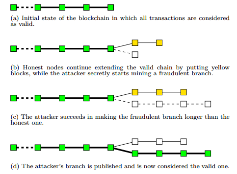

加密货币的本质（作者：阮一峰）
现在，各种加密货币不计其数。 很多人都在问，加密货币的时代，真的来临了吗？将来会不会人类不再使用美元、人民币，改用加密货币？ 那么多品种，我应该使用哪一种币？要不要现在就去投资一些？
下面就是我对这个问题的思考。本文不涉及技术，只讨论最基本的原理
钱是什么?
大家都知道，人民币是钱，美元是钱，金银财宝是钱。它们为什么能成为钱？ 你可能回答，因为它们有价值，或者是价值的代表。但是，有价值的东西多了，为什么只有这些品种成为了钱？
答案很容易想到，因为人们普遍相信（认同）它们的价值，其他东西的价值难以得到普通认同，无法成为钱
比如，邮票的价值就没有普遍的认同，除了集邮爱好者，其他地方都不能当钱用
一般来说，认同的人越多，这种钱的通用性就越高
我曾经去俄罗斯旅行，当地货币是卢布。可是，一旦离开俄国，没人相信它的购买力，所以卢布离开俄国就没用了 相反，全世界人民都相信美元的价值，所以全世界都能用。我用美元付账的时候，我发现那些俄国人都很满意
所以，钱的本质，或者说货币的本质，就是它的 可信性 。它必须使人们相信，它是有价值的，然后才能成为钱，才能被收藏和支付
可信性
为什么钱必须是可信的？因为对方必须相信它的价值，否则你没法支付出去。
那么，接下来的问题就是，可信的东西是否就是钱？
我的回答是 Yes。一样东西能否成为钱，只取决于人们是否相信它的价值，至于它是不是真的有价值，根本不重要
如果马云在一张纸条上写"这张纸条价值10000元"，下面签了他的名，并且附上防伪标记。你说这纸条是钱吗？ 我跟你保证，这就是钱，你用来支付，人们都会接受，马云等同于发行了一种新的纸币
比特币也是如此，它是什么，其实不太重要。重要的是，它必须保证自己是可信的，这样才能让足够的人相信它的价值，然后才能成为钱
比特币的可信性
比特币要解决的核心问题，就是创造一种 可信的 数字凭证 。由于这种凭证可信，所以能够当做货币
比特币的技术基础是加密学，因为只有加密学才能保证它的可信性 一旦加密被破解，它就没法当作货币了。这也是这一类数字凭证被称为"加密货币"的原因
技术人员对比特币感兴趣，还有一个重要原因。任何需要可靠的数字凭证的场合，也许都可以用到这种技术
它是不是货币，可能不是那么重要，重要的是它背后的那些加密技术，也许有更大的应用场景
特点
比特币有三个特点，保证了它的可信性
- 它 不会被（轻易）偷走 。或者反过来说，它使得你无法去偷别人，你只能花你自己的钱。因为必须要有别人的私钥，才能取出他的钱。正常情况下，你拿不到别人的私钥
- 它 无法伪造 。每一个比特币都能追溯来源，而所有比特币都来源于矿工获得的奖励。矿工只有新建区块，才能获得奖励，这是很难的事情，所以无法伪造比特币
- 它 无法大批生成 。原因跟上一条一样，比特币的发行速度是稳定的，现在每10分钟新增12.5个，然后每四年减半，最终停止增长。因此不会像纸币那样，政府滥发导致通货膨胀
没有实体
由于后面要提到的原因，比特币不可能拥有实体，没法做到"从口袋里掏出一个币"这种场景，交易都必须通过互联网完成 你可能会说，钱都有实体，怎么可能存在无形的钱呢？
答案正好相反，钱就应该是无形的，那些实体的钱其实是对物质材料的浪费， 由于技术不够发达，不得不做成实体
我小时候买东西，都必须用现金，否则没法证明，自己拥有购买力。只有通过实体的钱，才能保证对方确实收到了钱。如果银行业发达，就不用现金了，可以使用银行卡。支付的时候，对方抄一下银行卡号码，查询银行"这个账户有钱吗"。银行回答有钱，OK，成交。 但是，互联网使得实体的银行卡也不需要了。如果存在一个开放的中央记账系统，任何人都可以查询，你把钱划到老板的账户，老板查询一下，发现收到了，交易自动成交，整个过程都是无形的，还需要什么银行卡呢？
这个中央记账系统已经实现了，就叫做 区块链
区块链
区块链就是一个数据库，记载了所有的交易，用作中央记账系统，分布在无数个节点之上
每笔交易的核心，就是一句话，比如"张三向李四转移了1个比特币"。为了证明这句话可信，张三为它加上了数字签名。任何人都可以用张三的公钥，证明这确实是张三本人的行为。另一方面，其他人无法伪造张三的数字签名，所以不可能伪造这笔交易 矿工们收到这句话，首先验证数字签名的可信性，然后验证张三确实拥有这些比特币（每一笔交易都有上一笔交易的编号，用来查询比特币的来源）。验证通过以后，就着手把这句话写入区块链了。一旦写入区块链，所有人就都可以查询到，因此这笔比特币就被认为，从张三转移到了李四
区块链的作用就是把这句话 永久保存 下来了，让 任何人都可以查看 ，并且任何人（包括张三本人在内）都 无法再修改 了
货币是什么？其实就是这句话"张三向李四转移了1个比特币" 这一句话就完成了一次支付。我们平时用人民币支付，其实只是用纸币表达这条信息 如果每个人都可以实时写入/读取中央记账系统（区块链），那么完全可以不携带货币
数字货币的本质，就是一条 可信的 数据库记录 。数据库记录了你拥有了多少钱，由于这个记录可信，你就真的因此拥有了这笔购买力
双重支出
前面说过，交易不可能被伪造。但是，由于每一笔交易都是一串二进制信号，因此可能被复制 举例来说，"张三向李四转移了1个比特币"这句话，可能被其他人复制，也可能被张三自己复制，提交到区块链
如果这句话被两次写入区块链，就意味着张三可以把同一笔钱花掉两次。但是，第二次写入的时候，查询区块链可以发现张三已经把这笔钱花掉了，从而认定这是不合法的交易，不能写入区块链。因此， 复制交易是不可能的
比较麻烦的是另一种情况，就是张三把同一笔钱付给两个人。他先向区块链提交一个交易"张三向李四转移了1个比特币"，然后又提交了另一个交易"张三向王五转移了1个比特币"。这两个交易都可能被认为是真实的交易，从而进入区块链。因此，必须有办法防止出现这种情况 情况一：同一个矿工收到了这两个交易。那么他会察觉到，它们不可能同时成立，因此选择其中的一笔写入区块链 情况二：矿工 A 收到了第一笔交易，矿工 B 收到了第二笔交易，他们各自都会认定这是合法的交易，分别把这两笔交易写入了两个区块，这时区块链就出现了分叉

比特币协议规定，分叉点之后最先达到6个区块的那个分支，被认定为正式的区块链，其他分支都将被放弃。由于区块的生成速度由计算能力决定，所以到底哪一笔交易最后会被写入区块链，完全由它所在的分支能吸引多少计算能力决定。隐藏的逻辑是， 如果大多数人（计算能力）选择相信某一笔交易，那么它就应该是真的
综上所述，双重支出不可能发生。因为中央记账系统总有办法发现，你把同一笔钱花了两遍 但是，这也说明了比特币的一个代价，就是交易不能实时确认，必须等待至少一个小时